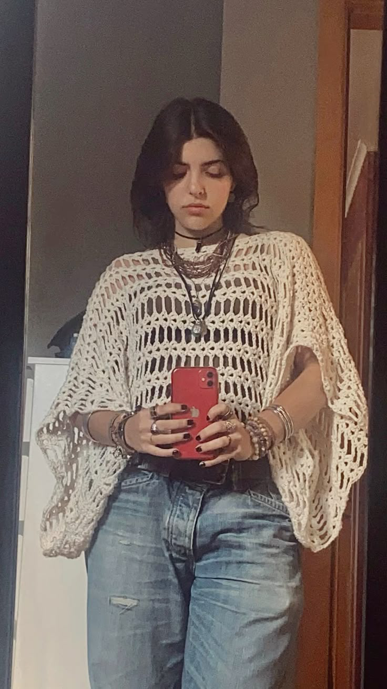
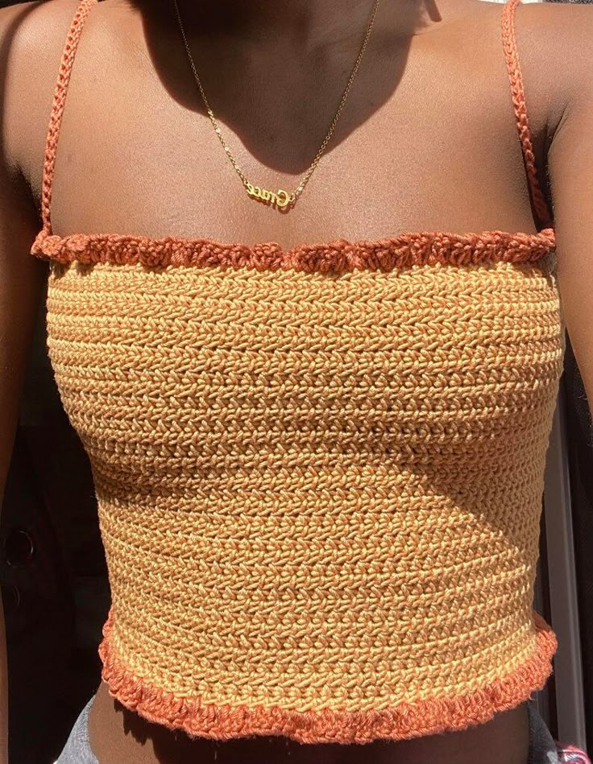

Clothing and Crochet
The Perfect Crochet Top Styles to try out this summer 2025
Author: Ladele Simi
12th July, 2025

As summer approaches, it's time to refresh your wardrobe with the perfect crochet top styles that will not only keep you cool but also elevate your fashion game. This year, crochet tops are making a bold statement, combining comfort and style in ways you've never imagined.

From delicate lace patterns to vibrant colors, there's a crochet shirt style for everyone. Consider embracing the bohemian vibe with oversized crochet tops that pair beautifully with high-waisted shorts or flowy skirts. These pieces offer versatility and can easily transition from beach days to evening outings.

If you're looking for something more structured, opt for fitted crochet top patterns that highlight your silhouette while still providing breathability. These are known for their versatility and different designs.

Going for something more open in the summer heat. Pair a vibrant crochet crop top with high-waisted shorts for a casual beach day look. Whether it’s layering a cropped design over a sundress or mixing textures with denim jackets, the possibilities are endless.

You could also opt for an elegant long-sleeve version over a flowy maxi skirt for evening outings. This summer, let your creativity shine through with these stunning crochet top styles that promise to keep you stylishly cool all season long! Explore various crochet shirt styles that cater to every taste—from bohemian chic to modern minimalist. Whether you prefer delicate lace patterns or bold geometric designs, there’s a plethora of crochet top patterns to choose from that can easily be dressed up or down.
We'd love to hear your thoughts below